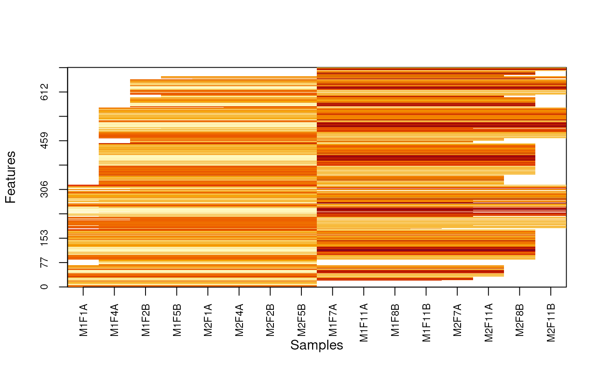
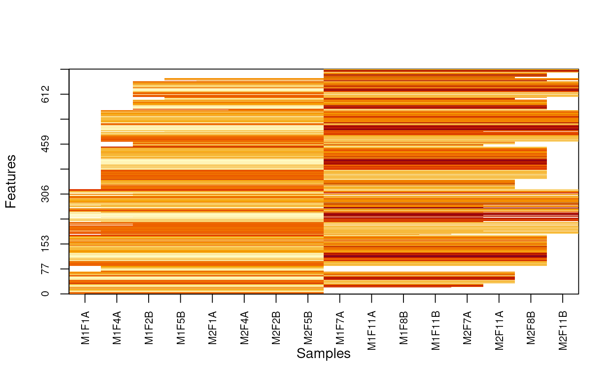
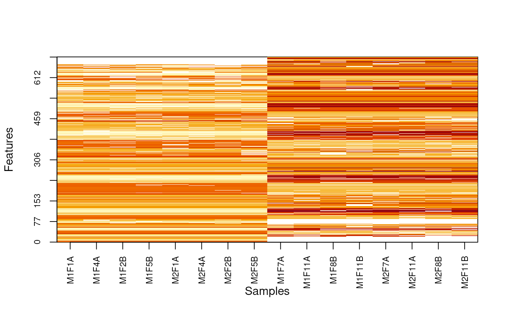
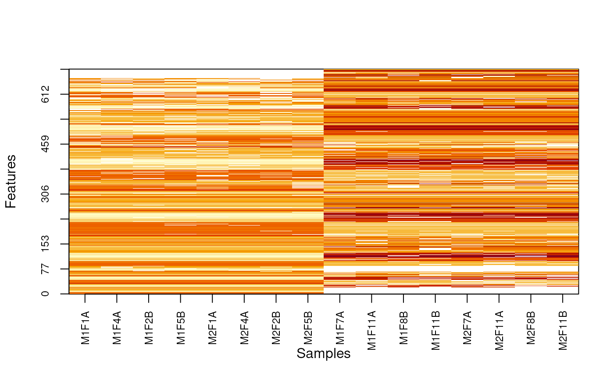

Produces a heatmap after reordring rows and columsn to highlight missing value patterns.
Arguments
- object
An instance of class MSnSet
- pcol
Either the name of a phenoData variable to be used to determine the group structure or a factor or any object that can be coerced as a factor of length equal to nrow(object). The resulting factor must have 2 levels. If missing (default)
image(object)is called.- Rowv
Determines if and how the rows/features are reordered. If missing (default), rows are reordered according to
order((nNA1 + 1)^2/(nNA2 + 1)), where NA1 and NA2 are the number of missing values in each group. Use a vector of numerics of feautre names to customise row order.- Colv
A
logicalthat determines if columns/samples are reordered. Default isTRUE.- useGroupMean
Replace individual feature intensities by the group mean intensity. Default is FALSE.
- plot
A
logicalspecifying of an image should be produced. Default isTRUE.- ...
Additional arguments passed to
image.
Examples
library("pRolocdata")
library("pRoloc")
data(dunkley2006)
pcol <- ifelse(dunkley2006$fraction <= 5, "A", "B")
nax <- makeNaData(dunkley2006, pNA = 0.10)
exprs(nax)[sample(nrow(nax), 30), pcol == "A"] <- NA
exprs(nax)[sample(nrow(nax), 50), pcol == "B"] <- NA
MSnbase:::imageNA2(nax, pcol)
 MSnbase:::imageNA2(nax, pcol, useGroupMean = TRUE)

MSnbase:::imageNA2(nax, pcol, Colv = FALSE, useGroupMean = FALSE)
MSnbase:::imageNA2(nax, pcol, useGroupMean = TRUE)

MSnbase:::imageNA2(nax, pcol, Colv = FALSE, useGroupMean = FALSE)
 MSnbase:::imageNA2(nax, pcol, Colv = FALSE, useGroupMean = TRUE)

MSnbase:::imageNA2(nax, pcol, Colv = FALSE, useGroupMean = TRUE)
